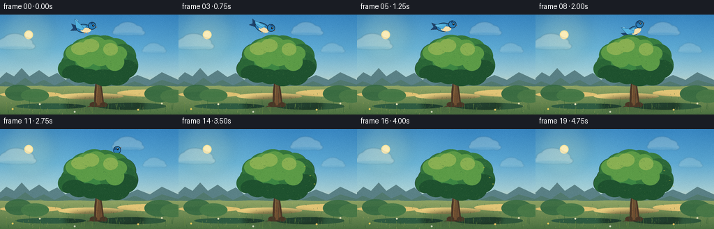

CODING AGENTS AS PIXEL WORLD MODELS
traex/DeepSeek-V4.1-Flash · dynamic_spatial_relationship_0047
点击播放 · 原生 RGB 像素
逐轮保存的候选
回放视频、检查图与代码变化。
每份候选均可单独播放。实际图片检查记录在下方工具轨迹中。
候选 01播放与检查图
点击播放 · 原生 RGB 像素

展开代码变化
--- 上一保存版本
+++ 本次保存版本
@@ -0,0 +1,518 @@
+"""Generate a short RGB animation of a bird flying behind a tree."""
+
+from __future__ import annotations
+
+import json
+import math
+from pathlib import Path
+
+import numpy as np
+from PIL import Image, ImageChops, ImageDraw, ImageFilter
+
+import artifact_io
+
+
+CASE_DIR = Path(__file__).resolve().parent
+SPEC = json.loads((CASE_DIR / "task_spec.json").read_text())
+W = int(SPEC["width"])
+H = int(SPEC["height"])
+N = int(SPEC["frames"])
+FPS = float(SPEC["fps"])
+S = 4 # Supersampling for crisp antialiased shapes.
+HI_W, HI_H = W * S, H * S
+
+
+def sc(value: float) -> int:
+ return int(round(value * S))
+
+
+def box(x0: float, y0: float, x1: float, y1: float) -> tuple[int, int, int, int]:
+ return sc(x0), sc(y0), sc(x1), sc(y1)
+
+
+def mix(a: tuple[float, ...], b: tuple[float, ...], t: float) -> tuple[float, ...]:
+ return tuple(x + (y - x) * t for x, y in zip(a, b))
+
+
+def color_at(stops: list[tuple[float, tuple[int, int, int]]], t: float) -> tuple[int, int, int]:
+ t = max(0.0, min(1.0, t))
+ for index in range(len(stops) - 1):
+ p0, c0 = stops[index]
+ p1, c1 = stops[index + 1]
+ if p0 <= t <= p1:
+ local = (t - p0) / max(1e-8, p1 - p0)
+ return tuple(int(round(v)) for v in mix(c0, c1, local))
+ return stops[-1][1]
+
+
+def smoothstep(t: float) -> float:
+ t = max(0.0, min(1.0, t))
+ return t * t * (3.0 - 2.0 * t)
+
+
+def bezier(p0: tuple[float, float], p1: tuple[float, float],
+ p2: tuple[float, float], p3: tuple[float, float], t: float) -> tuple[float, float]:
+ u = 1.0 - t
+ return (
+ u**3 * p0[0] + 3 * u**2 * t * p1[0] + 3 * u * t**2 * p2[0] + t**3 * p3[0],
+ u**3 * p0[1] + 3 * u**2 * t * p1[1] + 3 * u * t**2 * p2[1] + t**3 * p3[1],
+ )
+
+
+def make_sky() -> Image.Image:
+ y = np.arange(HI_H, dtype=np.float32)[:, None] / (HI_H - 1)
+ x = np.arange(HI_W, dtype=np.float32)[None, :] / (HI_W - 1)
+ stops = [
+ (0.00, (56, 137, 198)),
+ (0.34, (94, 170, 211)),
+ (0.61, (166, 207, 214)),
+ (0.77, (230, 225, 187)),
+ (1.00, (242, 218, 176)),
+ ]
+ rgb = np.empty((HI_H, HI_W, 3), dtype=np.float32)
+ for channel in range(3):
+ values = np.array([stop[1][channel] for stop in stops], dtype=np.float32)
+ positions = np.array([stop[0] for stop in stops], dtype=np.float32)
+ rgb[:, :, channel] = np.interp(y[:, 0], positions, values)[:, None]
+
+ # Gentle warm light from the upper-left and a barely-there sky texture.
+ glow = np.exp(-(((x - 0.16) ** 2) / 0.075 + ((y - 0.20) ** 2) / 0.11))
+ rgb += glow[:, :, None] * np.array([20, 15, 1], dtype=np.float32)
+ rgb += (np.sin(x * 17.0 + y * 5.0) * 1.4).astype(np.float32)[:, :, None]
+ return Image.fromarray(np.clip(rgb, 0, 255).astype(np.uint8), "RGB")
+
+
+def add_sun(base: Image.Image) -> Image.Image:
+ glow = Image.new("RGBA", base.size, (0, 0, 0, 0))
+ gd = ImageDraw.Draw(glow)
+ for radius, alpha in [(38, 16), (29, 20), (20, 26), (12, 40)]:
+ gd.ellipse(
+ (sc(41 - radius), sc(29 - radius), sc(41 + radius), sc(29 + radius)),
+ fill=(255, 229, 150, alpha),
+ )
+ glow = glow.filter(ImageFilter.GaussianBlur(sc(7)))
+ base = Image.alpha_composite(base.convert("RGBA"), glow)
+ draw = ImageDraw.Draw(base)
+ draw.ellipse(box(34.8, 22.8, 47.2, 35.2), fill=(255, 232, 162, 255))
+ draw.ellipse(box(36.3, 24.3, 45.7, 33.7), fill=(255, 241, 190, 255))
+ return base
+
+
+def cloud_layer(frame: int) -> Image.Image:
+ layer = Image.new("RGBA", (HI_W, HI_H), (0, 0, 0, 0))
+ draw = ImageDraw.Draw(layer)
+ drift = frame * 0.17
+ clouds = [
+ (21 + drift, 42, 0.92, 72),
+ (183 - drift * 0.45, 23, 0.78, 58),
+ (220 + drift * 0.35, 50, 0.58, 45),
+ ]
+ for cx, cy, scale, alpha in clouds:
+ parts = [
+ (-20, 3, 8, 5),
+ (-12, -2, 13, 8),
+ (0, -6, 18, 10),
+ (14, -2, 14, 8),
+ (23, 4, 9, 5),
+ ]
+ for ox, oy, rx, ry in parts:
+ draw.ellipse(
+ box(cx + ox * scale - rx * scale, cy + oy * scale - ry * scale,
+ cx + ox * scale + rx * scale, cy + oy * scale + ry * scale),
+ fill=(248, 246, 227, alpha),
+ )
+ draw.ellipse(
+ box(cx - 27 * scale, cy + 4 * scale, cx + 28 * scale, cy + 9 * scale),
+ fill=(235, 240, 224, int(alpha * 0.55)),
+ )
+ return layer.filter(ImageFilter.GaussianBlur(sc(0.75)))
+
+
+def draw_mountains(base: Image.Image) -> None:
+ draw = ImageDraw.Draw(base, "RGBA")
+
+ def ridge(points: list[tuple[float, float]], color: tuple[int, int, int, int]) -> None:
+ poly = [(sc(x), sc(y)) for x, y in points]
+ poly += [(HI_W, sc(111)), (0, sc(111))]
+ draw.polygon(poly, fill=color)
+
+ ridge(
+ [(-4, 95), (9, 83), (20, 89), (31, 77), (42, 89), (56, 80), (70, 90),
+ (82, 84), (94, 94), (106, 86), (121, 93), (135, 82), (150, 91),
+ (166, 84), (181, 94), (197, 87), (215, 94), (232, 83), (260, 96)],
+ (91, 130, 135, 235),
+ )
+ ridge(
+ [(-5, 103), (8, 96), (22, 101), (36, 91), (49, 100), (63, 94),
+ (78, 102), (93, 95), (109, 103), (124, 96), (141, 103),
+ (158, 95), (176, 102), (193, 96), (212, 103), (232, 94), (260, 102)],
+ (82, 122, 111, 220),
+ )
+ ridge(
+ [(-3, 110), (18, 104), (36, 109), (58, 101), (77, 108), (98, 103),
+ (120, 110), (141, 104), (162, 110), (184, 103), (205, 109),
+ (228, 104), (259, 110)],
+ (105, 139, 104, 230),
+ )
+
+
+def draw_meadow(base: Image.Image) -> None:
+ arr = np.asarray(base.convert("RGB")).copy()
+ yy = np.arange(HI_H, dtype=np.float32)[:, None]
+ t = np.clip((yy - sc(103)) / (HI_H - sc(103)), 0, 1)
+ top = np.array([145, 165, 101], dtype=np.float32)
+ bottom = np.array([77, 116, 67], dtype=np.float32)
+ ground = top[None, None, :] * (1 - t[:, :, None]) + bottom[None, None, :] * t[:, :, None]
+ mask = yy >= (sc(103) + 1.8 * np.sin(np.arange(HI_W)[None, :] / 39.0))
+ arr = np.where(mask[:, :, None], ground, arr)
+ base.paste(Image.fromarray(np.clip(arr, 0, 255).astype(np.uint8), "RGB"))
+
+ draw = ImageDraw.Draw(base, "RGBA")
+ # Warm sunlit field bands and cool shadow pockets.
+ for x0, x1, y0, y1, fill in [
+ (0, 88, 111, 119, (225, 195, 116, 46)),
+ (83, 177, 113, 122, (231, 204, 126, 42)),
+ (168, 256, 108, 118, (228, 199, 120, 40)),
+ (22, 123, 128, 136, (47, 92, 66, 42)),
+ (139, 238, 127, 137, (49, 90, 61, 46)),
+ ]:
+ draw.ellipse(box(x0, y0, x1, y1), fill=fill)
+
+ rng = np.random.default_rng(17)
+ for _ in range(145):
+ x = float(rng.uniform(0, W))
+ y = float(rng.uniform(108, H))
+ length = float(rng.uniform(0.8, 2.8))
+ light = rng.random() < 0.55
+ col = (192, 183, 103, 82) if light else (45, 92, 56, 82)
+ draw.line((sc(x), sc(y), sc(x + rng.uniform(-0.6, 0.6)), sc(y - length)),
+ fill=col, width=max(1, sc(0.22)))
+
+
+def draw_tree_shadow(base: Image.Image) -> Image.Image:
+ layer = Image.new("RGBA", (HI_W, HI_H), (0, 0, 0, 0))
+ draw = ImageDraw.Draw(layer)
+ draw.ellipse(box(95, 121, 205, 139), fill=(29, 55, 43, 72))
+ layer = layer.filter(ImageFilter.GaussianBlur(sc(4.2)))
+ return Image.alpha_composite(base.convert("RGBA"), layer)
+
+
+def branch(draw: ImageDraw.ImageDraw, points: list[tuple[float, float]],
+ width: float, fill: tuple[int, int, int, int]) -> None:
+ scaled = [(sc(x), sc(y)) for x, y in points]
+ draw.line(scaled, fill=fill, width=sc(width), joint="curve")
+ radius = width / 2
+ for x, y in points:
+ draw.ellipse(box(x - radius, y - radius, x + radius, y + radius), fill=fill)
+
+
+def draw_trunk(base: Image.Image) -> Image.Image:
+ layer = Image.new("RGBA", (HI_W, HI_H), (0, 0, 0, 0))
+ draw = ImageDraw.Draw(layer)
+
+ # Main forked branches, painted behind the crown.
+ branch(draw, [(138, 96), (128, 80), (112, 66), (104, 60)], 5.3, (77, 57, 40, 255))
+ branch(draw, [(141, 94), (154, 78), (174, 66), (182, 59)], 5.0, (77, 57, 40, 255))
+ branch(draw, [(137, 84), (122, 68), (118, 54)], 3.4, (84, 61, 42, 255))
+ branch(draw, [(142, 83), (158, 67), (165, 52)], 3.2, (84, 61, 42, 255))
+
+ trunk = [
+ (132.2, 133.0), (135.0, 127.2), (135.3, 111.0), (137.2, 96.0),
+ (135.7, 83.0), (138.5, 65.0), (145.4, 65.2), (146.4, 82.0),
+ (144.4, 96.5), (147.0, 111.8), (149.0, 128.0), (153.0, 133.0),
+ ]
+ draw.polygon([(sc(x), sc(y)) for x, y in trunk], fill=(74, 55, 39, 255))
+ inner = [
+ (136.4, 131.2), (138.0, 126.3), (138.0, 111.0), (139.6, 95.8),
+ (138.6, 82.6), (140.3, 68.1), (143.6, 68.2), (144.0, 82.3),
+ (142.7, 96.6), (144.8, 111.6), (147.3, 130.0),
+ ]
+ draw.polygon([(sc(x), sc(y)) for x, y in inner], fill=(112, 79, 50, 255))
+ draw.line([(sc(138.1), sc(126)), (sc(139.3), sc(108)), (sc(138.7), sc(89)),
+ (sc(140.9), sc(71))], fill=(146, 101, 59, 190), width=sc(0.8))
+ draw.line([(sc(143.3), sc(129)), (sc(143.5), sc(112)), (sc(141.9), sc(96))],
+ fill=(72, 50, 38, 170), width=sc(0.65))
+ for x0, y0, x1, y1 in [
+ (136.3, 116, 141.5, 118.1),
+ (138.3, 103, 143.1, 105.0),
+ (139.5, 87, 143.4, 89.5),
+ ]:
+ draw.line((sc(x0), sc(y0), sc(x1), sc(y1)), fill=(66, 47, 35, 130), width=sc(0.5))
+
+ # Root flare and a small exposed root.
+ draw.ellipse(box(128.5, 126.0, 139.3, 133.0), fill=(74, 55, 39, 255))
+ draw.ellipse(box(143.0, 126.2, 154.0, 133.0), fill=(74, 55, 39, 255))
+ draw.polygon(
+ [(sc(130.8), sc(130.5)), (sc(124.0), sc(133.2)), (sc(130.8), sc(132.4))],
+ fill=(78, 56, 39, 255),
+ )
+ return Image.alpha_composite(base.convert("RGBA"), layer)
+
+
+def canopy_mask() -> Image.Image:
+ mask = Image.new("L", (HI_W, HI_H), 0)
+ draw = ImageDraw.Draw(mask)
+ crowns = [
+ (87, 54, 126, 91), (91, 41, 132, 76), (101, 34, 144, 68),
+ (113, 29, 157, 65), (128, 30, 171, 67), (145, 34, 185, 70),
+ (158, 42, 195, 78), (161, 54, 198, 92), (148, 67, 187, 102),
+ (130, 68, 169, 103), (112, 65, 151, 100), (95, 64, 132, 98),
+ (83, 64, 111, 92), (108, 47, 147, 88), (126, 43, 167, 86),
+ (143, 49, 183, 91),
+ ]
+ for crown in crowns:
+ draw.ellipse(box(*crown), fill=255)
+ return mask
+
+
+def draw_canopy(base: Image.Image, frame: int) -> Image.Image:
+ mask = canopy_mask()
+ layer = Image.new("RGBA", (HI_W, HI_H), (0, 0, 0, 0))
+ draw = ImageDraw.Draw(layer)
+ sway = math.sin(frame * 0.42) * 0.35
+
+ crowns = [
+ (87, 54, 126, 91), (91, 41, 132, 76), (101, 34, 144, 68),
+ (113, 29, 157, 65), (128, 30, 171, 67), (145, 34, 185, 70),
+ (158, 42, 195, 78), (161, 54, 198, 92), (148, 67, 187, 102),
+ (130, 68, 169, 103), (112, 65, 151, 100), (95, 64, 132, 98),
+ (83, 64, 111, 92), (108, 47, 147, 88), (126, 43, 167, 86),
+ (143, 49, 183, 91),
+ ]
+ base_colors = [
+ (45, 104, 57), (51, 115, 60), (53, 121, 62), (58, 128, 64),
+ (54, 119, 60), (57, 126, 64), (45, 106, 58), (40, 98, 55),
+ (38, 92, 52), (43, 99, 54), (47, 108, 56), (48, 111, 58),
+ (42, 102, 55), (61, 132, 66), (61, 134, 67), (50, 116, 61),
+ ]
+ for crown, col in zip(crowns, base_colors):
+ x0, y0, x1, y1 = crown
+ draw.ellipse(box(x0 + sway, y0, x1 + sway, y1), fill=col + (255,))
+
+ # Deep underside and broad leafy clusters.
+ shadows = [
+ (89, 73, 124, 96), (105, 78, 145, 105), (126, 79, 169, 107),
+ (147, 77, 187, 103), (164, 65, 198, 94), (122, 82, 161, 107),
+ ]
+ for crown in shadows:
+ draw.ellipse(box(*crown), fill=(31, 82, 47, 205))
+
+ highlights = [
+ (94, 43, 126, 67), (108, 35, 140, 61), (123, 32, 153, 57),
+ (142, 36, 169, 60), (155, 45, 182, 67), (108, 51, 136, 76),
+ (129, 47, 159, 74), (151, 55, 178, 81),
+ ]
+ for crown in highlights:
+ draw.ellipse(box(*crown), fill=(92, 155, 71, 178))
+ for crown in [(102, 40, 128, 58), (118, 35, 142, 54), (148, 41, 169, 59)]:
+ draw.ellipse(box(*crown), fill=(137, 176, 83, 135))
+
+ # Fine leaf marks are clipped to the crown silhouette.
+ marks = Image.new("RGBA", (HI_W, HI_H), (0, 0, 0, 0))
+ md = ImageDraw.Draw(marks)
+ rng = np.random.default_rng(29)
+ for _ in range(330):
+ x = float(rng.uniform(86, 198))
+ y = float(rng.uniform(32, 105))
+ if mask.getpixel((sc(x), sc(y))) == 0:
+ continue
+ length = float(rng.uniform(1.0, 2.5))
+ angle = float(rng.uniform(-1.2, 1.2))
+ dx = math.cos(angle) * length * 0.5
+ dy = math.sin(angle) * length * 0.5
+ if rng.random() < 0.50:
+ col = (31, 86, 48, 115)
+ elif rng.random() < 0.76:
+ col = (123, 171, 77, 105)
+ else:
+ col = (195, 194, 104, 68)
+ md.line((sc(x - dx), sc(y - dy), sc(x + dx), sc(y + dy)),
+ fill=col, width=max(1, sc(0.28)))
+
+ alpha = ImageChops.multiply(marks.getchannel("A"), mask)
+ marks.putalpha(alpha)
+ layer = Image.alpha_composite(layer, marks)
+
+ # The final alpha is the crown silhouette, producing a clean occlusion edge.
+ layer.putalpha(mask)
+ return Image.alpha_composite(base.convert("RGBA"), layer)
+
+
+def draw_far_bushes(base: Image.Image) -> Image.Image:
+ layer = Image.new("RGBA", (HI_W, HI_H), (0, 0, 0, 0))
+ draw = ImageDraw.Draw(layer)
+ for x0, x1, y0, y1, col in [
+ (7, 46, 101, 124, (53, 106, 66, 220)),
+ (30, 70, 107, 126, (65, 119, 70, 220)),
+ (207, 251, 102, 126, (55, 108, 66, 225)),
+ (230, 265, 108, 127, (68, 119, 70, 220)),
+ ]:
+ draw.ellipse(box(x0, y0, x1, y1), fill=col)
+ return Image.alpha_composite(base.convert("RGBA"), layer)
+
+
+def bird_pose(frame: int) -> tuple[float, float, float]:
+ p0, p1, p2, p3 = (121.0, 18.0), (134.0, 11.5), (170.0, 36.0), (184.0, 77.0)
+ raw = max(0.0, min(1.0, (frame - 2) / 15.0))
+ t = smoothstep(raw)
+ x, y = bezier(p0, p1, p2, p3, t)
+ if frame < 2:
+ y += 1.2 * math.sin((frame + 0.5) * math.pi / 2)
+
+ eps = 0.004
+ x2, y2 = bezier(p0, p1, p2, p3, min(1.0, t + eps))
+ x1, y1 = bezier(p0, p1, p2, p3, max(0.0, t - eps))
+ angle = math.degrees(math.atan2(y2 - y1, x2 - x1))
+ if raw <= 0:
+ angle = -2.0 + 1.6 * math.sin(frame * 0.8)
+ return x, y, angle
+
+
+def make_bird(flap: float) -> Image.Image:
+ sprite = Image.new("RGBA", (sc(52), sc(44)), (0, 0, 0, 0))
+ draw = ImageDraw.Draw(sprite)
+ cx, cy = 26.0, 23.0
+ outline = (19, 35, 50, 255)
+ navy = (30, 68, 111, 255)
+ blue = (42, 128, 189, 255)
+ bright = (84, 180, 225, 255)
+ cream = (246, 224, 173, 255)
+ rust = (220, 132, 54, 255)
+
+ # Tail and far wing sit behind the body.
+ draw.polygon(
+ [(sc(cx - 8), sc(cy - 2)), (sc(cx - 19), sc(cy - 6)),
+ (sc(cx - 16), sc(cy)), (sc(cx - 20), sc(cy + 4)),
+ (sc(cx - 7), sc(cy + 3))],
+ fill=navy, outline=outline,
+ )
+ far_tip_y = cy - 8.5 * flap - 1.5
+ draw.polygon(
+ [(sc(cx + 2), sc(cy - 4)), (sc(cx - 7), sc(cy - 3)),
+ (sc(cx - 13), sc(far_tip_y)), (sc(cx - 3), sc(cy + 1))],
+ fill=(27, 95, 153, 255), outline=outline,
+ )
+
+ # Body, pale breast, head, beak, and eye.
+ draw.ellipse(box(cx - 12, cy - 6.2, cx + 9.2, cy + 6.5),
+ fill=blue, outline=outline, width=sc(0.7))
+ draw.ellipse(box(cx - 5.5, cy - 1.0, cx + 9.3, cy + 6.1), fill=cream)
+ draw.polygon(
+ [(sc(cx + 7), sc(cy - 4)), (sc(cx + 18), sc(cy - 2.5)), (sc(cx + 7), sc(cy + 1))],
+ fill=rust, outline=(123, 68, 32, 255),
+ )
+ draw.ellipse(box(cx + 5.2, cy - 9.5, cx + 16.5, cy + 1.2),
+ fill=blue, outline=outline, width=sc(0.7))
+ draw.polygon(
+ [(sc(cx + 6.5), sc(cy - 8.7)), (sc(cx + 12.5), sc(cy - 9.0)),
+ (sc(cx + 10.2), sc(cy - 5.7))],
+ fill=(28, 79, 129, 255),
+ )
+ draw.ellipse(box(cx + 11.0, cy - 6.0, cx + 14.0, cy - 3.0), fill=(20, 28, 33, 255))
+ draw.ellipse(box(cx + 12.2, cy - 5.5, cx + 13.1, cy - 4.6), fill=(255, 250, 220, 255))
+ draw.line((sc(cx + 12.0), sc(cy - 7.1), sc(cx + 15.2), sc(cy - 7.0)),
+ fill=(21, 48, 69, 220), width=sc(0.45))
+
+ # Near wing changes silhouette from raised to gliding.
+ tip_y = cy - 14.5 * flap - 1.0
+ wing = [
+ (cx + 3.5, cy - 4.2),
+ (cx - 5.0, cy - 4.7),
+ (cx - 14.5, tip_y),
+ (cx - 12.0, cy - 0.5),
+ (cx - 3.0, cy + 3.0),
+ ]
+ draw.polygon([(sc(x), sc(y)) for x, y in wing], fill=bright, outline=outline)
+ draw.line((sc(cx - 2.5), sc(cy - 1.5), sc(cx - 11.8), sc(tip_y + 1.2)),
+ fill=(205, 236, 236, 205), width=sc(0.55))
+ draw.line((sc(cx - 1.0), sc(cy - 0.2), sc(cx - 9.8), sc(tip_y + 3.5)),
+ fill=(27, 102, 157, 210), width=sc(0.45))
+
+ # Tiny feet tucked beneath the body.
+ draw.line((sc(cx + 1.0), sc(cy + 5.2), sc(cx + 0.0), sc(cy + 8.0)),
+ fill=rust, width=sc(0.45))
+ draw.line((sc(cx + 4.0), sc(cy + 5.4), sc(cx + 5.0), sc(cy + 8.0)),
+ fill=rust, width=sc(0.45))
+ return sprite
+
+
+def paste_bird(base: Image.Image, frame: int) -> Image.Image:
+ x, y, angle = bird_pose(frame)
+ # Three-frame wing cycle; motion settles as the bird reaches the leaves.
+ flap_sequence = [0.85, 0.15, -0.75, 0.25]
+ flap = flap_sequence[frame % len(flap_sequence)]
+ sprite = make_bird(flap)
+ rotated = sprite.rotate(angle, resample=Image.Resampling.BICUBIC, expand=True)
+ left = sc(x) - rotated.width // 2
+ top = sc(y) - rotated.height // 2
+ base.alpha_composite(rotated, (left, top))
+ return base
+
+
+def draw_foreground(base: Image.Image, frame: int) -> Image.Image:
+ layer = Image.new("RGBA", (HI_W, HI_H), (0, 0, 0, 0))
+ draw = ImageDraw.Draw(layer)
+ rng = np.random.default_rng(101)
+
+ # A restrained foreground fringe keeps the tree rooted in the meadow.
+ for i in range(42):
+ x = float(rng.uniform(0, W))
+ base_y = float(rng.uniform(132, 143))
+ height = float(rng.uniform(3.0, 11.0))
+ lean = math.sin(frame * 0.55 + i * 0.83) * 0.9
+ col = (48, 93, 53, 205) if i % 3 else (105, 139, 66, 205)
+ draw.line(
+ (sc(x), sc(base_y), sc(x + lean), sc(base_y - height)),
+ fill=col, width=max(1, sc(0.38)),
+ )
+ for x, y, col in [
+ (18, 136, (246, 212, 95, 235)), (57, 129, (241, 233, 193, 230)),
+ (198, 137, (245, 204, 102, 235)), (232, 128, (239, 232, 192, 225)),
+ (107, 140, (235, 235, 214, 210)),
+ ]:
+ draw.ellipse(box(x - 1.2, y - 1.2, x + 1.2, y + 1.2), fill=col)
+
+ # A couple of loosened leaves register the bird's passage behind the crown.
+ if frame >= 13:
+ for index, (x0, y0, delay) in enumerate([(188, 66, 0), (181, 54, 2), (195, 79, 4)]):
+ age = max(0, frame - 13 - delay)
+ x = x0 + age * (0.7 + 0.18 * index)
+ y = y0 + age * (1.1 + 0.15 * index) + 0.04 * age * age
+ draw.ellipse(box(x - 1.2, y - 0.55, x + 1.2, y + 0.55),
+ fill=(172, 173, 68, max(80, 210 - age * 15)))
+
+ return Image.alpha_composite(base.convert("RGBA"), layer)
+
+
+def finish_frame(frame: int) -> np.ndarray:
+ image = make_sky()
+ image = add_sun(image)
+ image = Image.alpha_composite(image.convert("RGBA"), cloud_layer(frame))
+ draw_mountains(image)
+ draw_meadow(image)
+ image = draw_far_bushes(image)
+ image = draw_tree_shadow(image)
+ image = draw_trunk(image)
+ image = paste_bird(image, frame)
+ image = draw_canopy(image, frame)
+ image = draw_foreground(image, frame)
+
+ image = image.convert("RGB").resize((W, H), Image.Resampling.LANCZOS)
+ arr = np.asarray(image).astype(np.float32)
+
+ # Very light optical texture and vignette, applied after downsampling.
+ yy, xx = np.mgrid[0:H, 0:W]
+ vignette = 1.0 - 0.075 * (((xx - W * 0.5) / W) ** 2 + ((yy - H * 0.52) / H) ** 2)
+ rng = np.random.default_rng(1000 + frame)
+ grain = rng.normal(0, 1.35, (H, W, 1))
+ arr = arr * vignette[:, :, None] + grain
+ return np.clip(arr, 0, 255).astype(np.uint8)
+
+
+def main() -> None:
+ frames = np.stack([finish_frame(index) for index in range(N)], axis=0)
+ artifact_io.save(frames, CASE_DIR)
+
+
+if __name__ == "__main__":
+ main()
候选 02播放与检查图
点击播放 · 原生 RGB 像素

展开代码变化
--- 上一保存版本
+++ 本次保存版本
@@ -352,7 +352,7 @@
def bird_pose(frame: int) -> tuple[float, float, float]:
- p0, p1, p2, p3 = (121.0, 18.0), (134.0, 11.5), (170.0, 36.0), (184.0, 77.0)
+ p0, p1, p2, p3 = (121.0, 18.0), (134.0, 11.5), (170.0, 34.0), (190.0, 70.0)
raw = max(0.0, min(1.0, (frame - 2) / 15.0))
t = smoothstep(raw)
x, y = bezier(p0, p1, p2, p3, t)
候选 03播放与检查图
可观测工具轨迹
实际执行的命令与返回图片。
命令 1exit 0
/bin/bash -lc "pwd && rg --files -g '"'!*.mp4'"' -g '"'!*.mov'"' -g '"'!*.png'"' -g '"'!*.jpg'"' | sort"
命令 2exit 0
/bin/bash -lc "printf '%s\\n' '--- prompt.txt ---'; sed -n '1,240p' prompt.txt; printf '%s\\n' '--- GENERATION_RULES.md ---'; sed -n '1,280p' GENERATION_RULES.md; printf '%s\\n' '--- task_spec.json ---'; sed -n '1,280p' task_spec.json"
命令 3exit 0
/bin/bash -lc "sed -n '1,300p' artifact_io.py"
命令 4exit 0
/bin/bash -lc "sed -n '1,260p' player_template.html"
命令 5exit 0
/bin/bash -lc "find . -maxdepth 2 -type f -printf '%p %s bytes\\n' | sort; python - <<'PY' import importlib.util for m in ['PIL','numpy','cv2','imageio','matplotlib']: print(m, bool(importlib.util.find_spec(m))) PY"
命令 6exit 1
/bin/bash -lc 'python generate.py'
命令 7exit 0
/bin/bash -lc 'python generate.py'
命令 8exit 0
/bin/bash -lc 'command -v chafa || true; command -v viu || true; command -v img2txt || true; command -v ffmpeg || true'
命令 9exit 0
/bin/bash -lc "find . -maxdepth 2 -type f -printf '%p %s bytes\\n' | sort; python - <<'PY'
import json, numpy as np
from pathlib import Path
p=Path('.')
z=np.load(p/'pixels.npz')
print('pixels.npz',z['pixels'].shape,z['pixels'].dtype)
print('html_bytes',(p/'index.html').stat().st_size)
print('spec',json.loads((p/'task_spec.json').read_text()))
PY"命令 10exit 0
/bin/bash -lc "python - <<'PY'
from pathlib import Path
from PIL import Image
import numpy as np, json
p=Path('.')
files=sorted((p/'frames').glob('*.png'))
print('frame_count',len(files),'sizes',sorted(set(Image.open(f).size for f in files)))
arr=np.stack([np.asarray(Image.open(f).convert('RGB')) for f in files])
print('shape',arr.shape,'dtype',arr.dtype)
# Mean absolute frame differences: motion should be continuous but not excessive.
d=np.abs(arr[1:].astype(np.int16)-arr[:-1].astype(np.int16)).mean(axis=(1,2,3))
print('frame_diffs', ' '.join(f'{x:.3f}' for x in d))
# Bird-blue pixels: high blue, moderate green, low-ish red, upper-mid scene.
for i,a in enumerate(arr):
af=a.astype(int)
m=(af[:,:,2]>110)&(af[:,:,2]>af[:,:,0]*1.35)&(af[:,:,1]>55)&(af[:,:,1]<190)&(af[:,:,0]<100)
ys,xs=np.where(m)
if len(xs):
print(f'{i:02d} blue_n={len(xs):4d} centroid=({xs.mean():.1f},{ys.mean():.1f}) bbox=({xs.min()},{ys.min()})-({xs.max()},{ys.max()})')
else: print(f'{i:02d} blue_n=0')
PY"命令 11exit 0
/bin/bash -lc "python - <<'PY'
from PIL import Image
import numpy as np
# Print an ANSI half-block preview of representative frames. Disable if terminal output strips it.
a=np.asarray(Image.open('frames/00.png').convert('RGB'))
for y in range(0,144,4):
row=''
for x in range(0,256,4):
r,g,b=a[y:y+4,x:x+4].mean((0,1))
if b>g*1.15 and b>r*1.3: c='B'
elif g>r*1.15 and g>b*0.9: c='G'
elif r>g*1.08 and g>b*1.2: c='Y'
elif b>r*1.2: c='S'
elif max(r,g,b)<70: c='#'
elif min(r,g,b)>200: c='W'
elif g>r and b>r: c='c'
else: c='.'
row+=c
print(row)
PY"命令 12exit 0
/bin/bash -lc "python - <<'PY'
import generate as g
from PIL import Image, ImageChops
import numpy as np, math
mask=g.canopy_mask()
for i in range(g.N):
x,y,a=g.bird_pose(i)
flap=[.85,.15,-.75,.25][i%4]
spr=g.make_bird(flap).rotate(a,resample=Image.Resampling.BICUBIC,expand=True)
left=g.sc(x)-spr.width//2; top=g.sc(y)-spr.height//2
sa=spr.getchannel('A')
# Downsample sprite alpha to the 4x canopy coordinates at its paste position.
overlap=0; opaque=0; above=0
for yy in range(sa.height):
for xx in range(sa.width):
if sa.getpixel((xx,yy))>32:
opaque+=1
gx=left+xx; gy=top+yy
if 0<=gx<mask.width and 0<=gy<mask.height and mask.getpixel((gx,gy))>128:
overlap+=1
if gy<mask.getbbox()[1]: above+=1
print(f'{i:02d} pose=({x:6.2f},{y:6.2f}) angle={a:6.2f} opaque={opaque:4d} overlap={overlap:4d} ({100*overlap/max(1,opaque):5.1f}%)')
PY"命令 13exit 0
/bin/bash -lc "python - <<'PY'
from PIL import Image, ImageDraw
import numpy as np
frames=[Image.open(f'frames/{i:02d}.png').convert('RGB') for i in range(20)]
# Native-resolution sheet for close visual inspection.
sheet=Image.new('RGB',(256*5, (144+18)*4),(22,24,28))
d=ImageDraw.Draw(sheet)
for i,im in enumerate(frames):
x=(i%5)*256; y=(i//5)*(144+18)
d.text((x+5,y+3),f'{i:02d} {i/4:.2f}s',fill=(235,240,245))
sheet.paste(im,(x,y+18))
sheet.save('.tmp/contact_native.png')
# Compare start/end crops and also report saliency/brightness ranges.
for idx in [0,4,8,10,12,14,19]:
im=frames[idx]
print(idx,'mean',round(float(np.mean(im)),1),'contrast',round(float(np.std(im)),1))
print('contact',sheet.size)
PY"命令 14exit 0
/bin/bash -lc "python - <<'PY'
import generate as g
from PIL import Image
import numpy as np
mask=np.asarray(g.canopy_mask())>128
for x,y,a in [(184,77,71),(190,70,65),(194,67,62),(198,64,58),(201,62,55),(194,72,66),(190,74,68),(187,73,68),(192,69,64),(196,66,60)]:
spr=g.make_bird(.25).rotate(a,resample=Image.Resampling.BICUBIC,expand=True)
alpha=np.asarray(spr.getchannel('A'))>32
left=g.sc(x)-spr.width//2; top=g.sc(y)-spr.height//2
ys,xs=np.where(alpha)
gx=xs+left; gy=ys+top
valid=(gx>=0)&(gx<mask.shape[1])&(gy>=0)&(gy<mask.shape[0])
ov=np.zeros_like(valid)
ov[valid]=mask[gy[valid],gx[valid]]
print((x,y,a),'overlap',round(100*ov.sum()/valid.sum(),1),'visible bbox', (xs.min()+left,xs.max()+left,ys.min()+top,ys.max()+top))
PY"命令 15exit 0
/bin/bash -lc "python - <<'PY'
from PIL import Image
import numpy as np
# Save enlarged start/end crops to make shape and edge inspection practical without image display tools.
a=Image.open('frames/00.png').convert('RGB')
b=Image.open('frames/19.png').convert('RGB')
out=Image.new('RGB',(1024,576),(20,22,26))
out.paste(a.resize((1024,576),Image.Resampling.NEAREST),(0,0))
out.save('.tmp/start_nearest.png')
out.paste(b.resize((1024,576),Image.Resampling.NEAREST),(0,0))
out.save('.tmp/end_nearest.png')
# Extract an upper-right crop where the bird path and canopy meet.
comp=Image.new('RGB',(1200,400),(20,22,26))
for j,i in enumerate([0,4,8,12,14,19]):
im=Image.open(f'frames/{i:02d}.png').convert('RGB').crop((70,0,256,120)).resize((300,300),Image.Resampling.LANCZOS)
comp.paste(im,(j*200,30))
comp.save('.tmp/key_crops.png')
PY"命令 16exit 0
/bin/bash -lc "python generate.py && python - <<'PY'
import generate as g
from PIL import Image
import numpy as np
mask=np.asarray(g.canopy_mask())>128
for i in [0,4,8,10,12,14,16,19]:
x,y,a=g.bird_pose(i)
flap=[.85,.15,-.75,.25][i%4]
spr=g.make_bird(flap).rotate(a,resample=Image.Resampling.BICUBIC,expand=True)
alpha=np.asarray(spr.getchannel('A'))>32
left=g.sc(x)-spr.width//2; top=g.sc(y)-spr.height//2
ys,xs=np.where(alpha); gx=xs+left; gy=ys+top
valid=(gx>=0)&(gx<mask.shape[1])&(gy>=0)&(gy<mask.shape[0])
ov=np.zeros_like(valid); ov[valid]=mask[gy[valid],gx[valid]]
print(f'{i:02d} pose=({x:.1f},{y:.1f}) overlap={100*ov.sum()/valid.sum():.1f}% visible={valid.sum()-ov.sum()}/{valid.sum()}')
PY"命令 17exit 0
/bin/bash -lc "python - <<'PY'
import importlib.util
for m in ['imageio_ffmpeg','av','moviepy']:
print(m, bool(importlib.util.find_spec(m)))
PY
python - <<'PY'
import imageio_ffmpeg
print('ffmpeg_exe',imageio_ffmpeg.get_ffmpeg_exe())
PY"命令 18exit 0
/bin/bash -lc 'FFMPEG=$(python -c '"'import imageio_ffmpeg; print(imageio_ffmpeg.get_ffmpeg_exe())'); \""'$FFMPEG" -y -hide_banner -loglevel error -framerate 4 -i frames/%02d.png -c:v libx264 -preset medium -crf 16 -pix_fmt yuv420p -movflags +faststart output.mp4; python - <<'"'PY'
from pathlib import Path
from PIL import Image
import numpy as np, json, hashlib
frames=sorted(Path('frames').glob('*.png'))
arr=np.stack([np.asarray(Image.open(p).convert('RGB')) for p in frames])
assert arr.shape==(20,144,256,3) and arr.dtype==np.uint8
z=np.load('pixels.npz')['pixels']
# Confirm saved packed tensor exactly represents the RGB PNGs.
packed=(arr[:,:,:,0].astype(np.uint32)<<16)|(arr[:,:,:,1].astype(np.uint32)<<8)|arr[:,:,:,2].astype(np.uint32)
print('packed_matches',np.array_equal(z,packed.transpose(1,2,0)))
print('rgb_sha256',hashlib.sha256(arr.tobytes()).hexdigest())
print('mp4_bytes',Path('output.mp4').stat().st_size)
print('index_bytes',Path('index.html').stat().st_size)
print('frames',len(frames))
PY"命令 19exit 0
/bin/bash -lc "python - <<'PY'
import hashlib, subprocess
from pathlib import Path
p=Path('frames'); before=hashlib.sha256(b''.join(x.read_bytes() for x in sorted(p.glob('*.png')))).hexdigest()
subprocess.run(['python','generate.py'],check=True,stdout=subprocess.DEVNULL,stderr=subprocess.DEVNULL)
after=hashlib.sha256(b''.join(x.read_bytes() for x in sorted(p.glob('*.png')))).hexdigest()
print('reproducible',before==after,before)
PY
FFMPEG="'$(python -c '"'import imageio_ffmpeg; print(imageio_ffmpeg.get_ffmpeg_exe())'); \""'$FFMPEG" -y -hide_banner -loglevel error -framerate 4 -i frames/%02d.png -c:v libx264 -preset medium -crf 16 -pix_fmt yuv420p -movflags +faststart output.mp4
python - <<'"'PY'
import av
c=av.open('output.mp4'); s=c.streams.video[0]
frames=sum(1 for _ in c.decode(video=0))
print('video_frames',frames,'size',s.codec_context.width,s.codec_context.height,'fps',float(s.average_rate),'duration_s',float(s.duration*s.time_base))
PY"保存候选 3 份；完成命令 19 次；可验证图片返回 0 张。原始 API 响应与完整日志保留在本地。